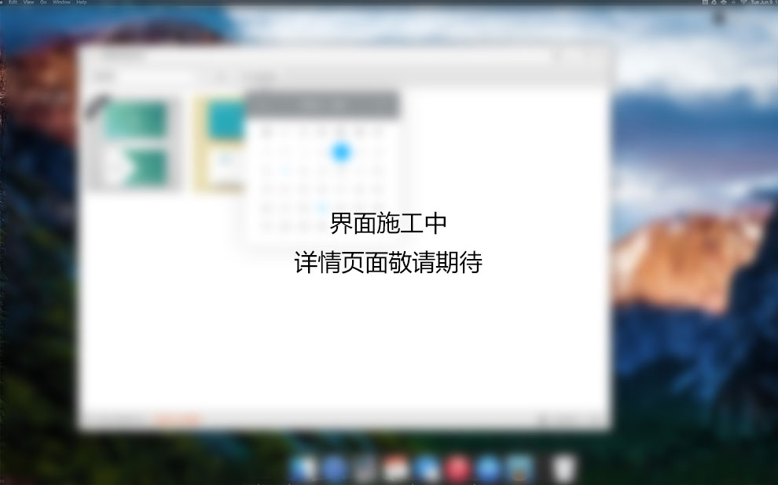

. 为挑战人效巅峰而生
FUNCTION INTRODUCTION
印链正式版附带的下单站点是真正无需专业的技术团队管理，用户可自由注册的电商网站级别下站网站。使用者可以傻瓜式上传产品图片，编辑产品信息，编辑网站BANNER页面，管理用户数据库，为不同的注册用户设置不同的信用额度。
印链电商网站的产品下单逻辑与体验逻辑源自于一幅图6年的印刷电商网站运营经验。在保证网站运营稳定性与安全性的同时，可以给下单的用户最好的体验感。
同时，使用印链正式版的用户可以自行购买由印链开发的网站皮肤，让您的网站在一众印刷企业中更亮眼，更出色。
用印链开发的下单站点，便宜；大气；体验感好，倍儿有面。
